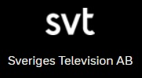

<!DOCTYPE html>
<html>
    <head>
        <link rel="stylesheet" href="footer.css">
        <title>Footer</title>
    </head>
    <body>
        <div class="footer-container">
            <div class="footer-top">
                <div class="top-1">
                    <ul>
                        <li><a href="#">Serier</a></li>
                        <li><a href="#">Nyheter</a></li>
                        <li><a href="#">Livsstil & reality</a></li>
                        <li><a href="#">Musik</a></li>
                        <li><a href="#">Öppet arkiv</a></li>
                    </ul>
                </div>
                <div class="top-2">
                    <ul>
                        <li><a href="#">Dokumentär</a></li>
                        <li><a href="#">Sport</a></li>
                        <li><a href="#">Fakta</a></li>
                        <li><a href="#">Samhälle</a></li>
                        <li><a href="#">Alla program</a></li>
                    </ul>
                </div>
                <div class="top-3">
                    <ul>
                        <li><a href="#">Humor</a></li>
                        <li><a href="#">Filmer</a></li>
                        <li><a href="#">Drama</a></li>
                        <li><a href="#">Djur & natur</a></li>
                    </ul>
                </div>
                <div class="top-4">
                    <ul>
                        <li><a href="#">TheNewBoston</a></li>
                        <li><a href="#">Underhållning</a></li>
                        <li><a href="#">Kultur</a></li>
                        <li><a href="#">Scen</a></li>
                    </ul>
                </div>
            </div>
            <!--HORIZONTAL LINE-->
            <div><hr size="5"; border:none></div>
            <div class="footer-middle">
                <p>Se dina favoritprogram på SVT Play - När och där du vill</p>
                <figure>
                    
                    <figcaption><a href="#">Dator</a></figcaption>
                </figure>
                <figure>
                    
                    <figcaption><a href="#">Mobil & platta</a></figcaption>
                </figure>
                <figure>
                    
                    <figcaption><a href="#">Tv</a></figcaption>
                </figure>
            </div>
            <!--HORIZONTAL LINE-->
            <div><hr size="5"></div>
            <div class="footer-bottom">
                <button type="button"><b>INSTÄLLNINGAR</b></button>
                <button type="button"><b>KONTAKT</b></button>
            </div>
            <div class="footer-bottom-logo"></div>
            <div class="footer-bottom-links">
                <ul>
                    <li><a href="#">svt.se</a></li>
                    <li><a href="#">Nyhetsbrev</a></li>
                    <li><a href="#">Tillgänglighet i SVT Play</a></li>
                    <li><a href="#">Om cookies och personuppgifter</a></li>
                </ul>
            </div>
        </div>
    </body>
</html>